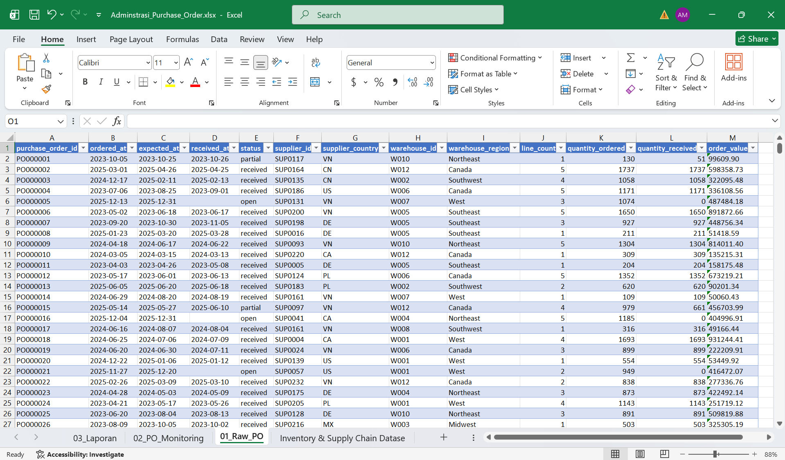
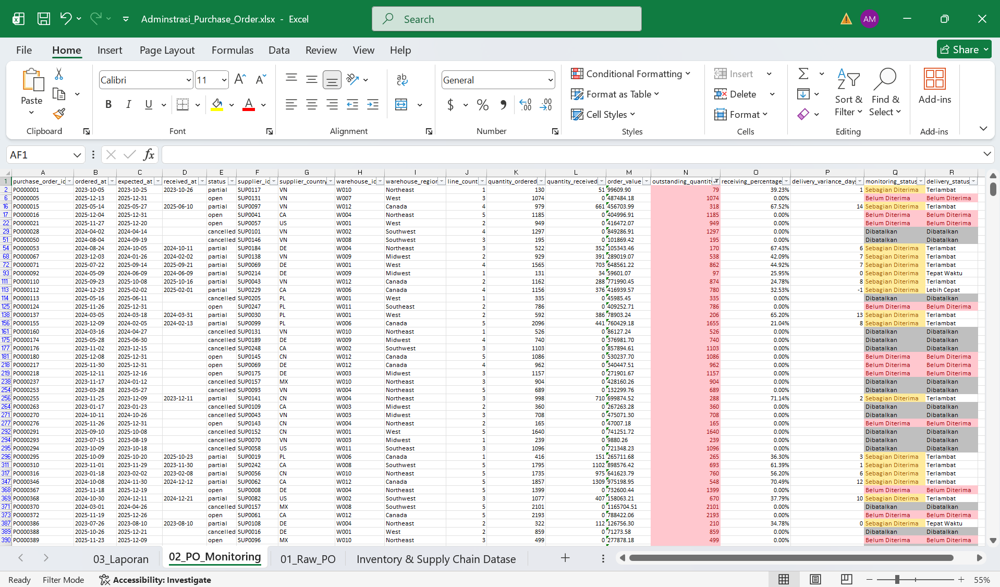
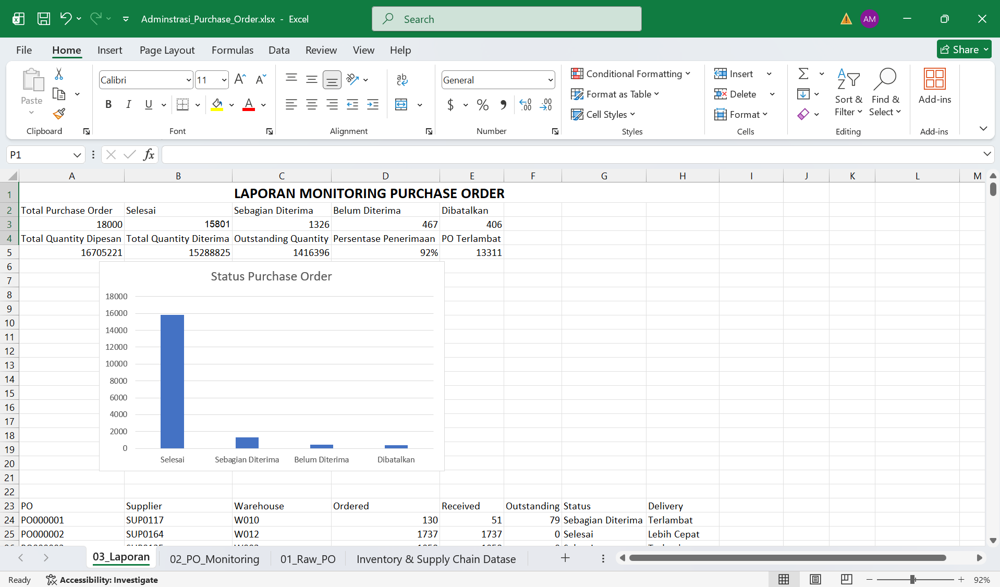

Data mentah
Menjaga data awal tetap utuh sebagai sumber sebelum pengolahan.
PORTOFOLIO ADMINISTRASI & OPERASIONAL
Simulasi pekerjaan administrasi operasional menggunakan Microsoft Excel untuk pencatatan, pemeriksaan, monitoring penerimaan, dan penyusunan laporan Purchase Order.
Angka diambil dari workbook hasil proyek dan digunakan sebagai ringkasan monitoring.
TUJUAN
Proyek ini dibuat untuk mensimulasikan pekerjaan administrasi purchase order: menerima data, memeriksa konsistensi, menambahkan informasi monitoring, kemudian menyusun ringkasan operasional yang mudah dibaca.
PROSES
Menjaga data awal tetap utuh sebagai sumber sebelum pengolahan.
Menghitung outstanding quantity, receiving percentage, selisih hari penerimaan, serta status monitoring.
Memisahkan status received, partial, open, dan cancelled agar seluruh PO terklasifikasi.
Menyusun KPI dan daftar PO yang perlu diperhatikan untuk kebutuhan operasional.
HASIL
Empat kategori tersebut mencakup seluruh 18.000 Purchase Order pada data yang digunakan.
01
Data Purchase Order sebelum kolom monitoring ditambahkan.

02
Kolom outstanding, receiving percentage, delivery variance, dan status monitoring.

03
Ringkasan KPI, status Purchase Order, dan tabel monitoring.

TEKNIS
=K2-L2menghitung jumlah yang belum diterima
=IFERROR(L2/K2;0)menghitung persentase penerimaan
=D2-C2menghitung selisih hari antara actual dan expected receipt
=COUNTIF(...)menghitung jumlah PO berdasarkan status
CATATAN DATA
Dataset yang digunakan merupakan data sintetis untuk kebutuhan pendidikan dan pengujian. Proyek ini tidak dimaksudkan sebagai representasi perusahaan nyata atau benchmark industri.
Sumber: Analytics Engineering — Inventory & Supply Chain Dataset, versi 1.0.0, CC BY 4.0.